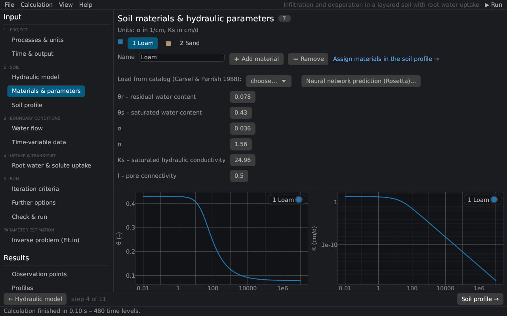

Materials & parameters
Each material (soil layer type) has its soil hydraulic parameters. The page corresponds to the Water Flow Parameters dialog of HYDRUS-1D; it also adds, removes and renames materials and draws θ(h) and K(h) of the selected material.


Materials
Click a material in the list to edit it. ➕ Add material adds a copy of the selected material with all its water, heat, solute and root parameters; ➖ Remove deletes it (nodes of this material get the material before it). Materials are assigned to the nodes on the page Soil profile. The name is shown in the profile and the plots (HYDRUS-1D files do not store it).
Parameters
The units are those of the project: α in 1/L, Ks in L/T.
| Parameter | HYDRUS | Description |
|---|---|---|
| θr | Qr | Residual water content [–]. |
| θs | Qs | Saturated water content [–]. |
| α | Alpha | Parameter of the retention function [1/L], roughly the inverse of the air-entry head. Brooks–Corey: inverse of the air-entry value; Kosugi: the median head hm. |
| n | n | Shape parameter [–] (> 1), the steeper the retention curve the larger n. Brooks–Corey: pore-size distribution index λ; Kosugi: standard deviation σ. |
| Ks | Ks | Saturated hydraulic conductivity [L/T]. |
| l | l | Pore-connectivity parameter of the conductivity function [–]. |
Further parameters of the models:
| Model | Parameters |
|---|---|
| Modified van Genuchten | θm (extrapolated water content at h = 0, ≥ θs), θa (≤ θr), θk and Kk (a measured point of K(θ)) Vogel and Císlerová (1988) |
| Durner | w2 (weight of the second pore system), α2, n2 Durner (1994) |
| Dual porosity, water-content transfer | θr,im, θs,im of the immobile region, ω [1/T] |
| Dual porosity, head transfer | θr,im, θs,im, α_im, n_im of the immobile region, ω |
| Dual permeability | θr,m, θs,m, α_m, n_m, Ks,m of the matrix (the primary columns describe the fractures) |
| Hysteresis | θm (drying), θs, α and (with hysteresis in K) Ks of the main wetting curve |
The parameter l
The parameter l represents the tortuosity and connectivity of the pores. Mualem (1976) estimated it as 0.5 for many soils, but there is no general agreement; from the UNSODA database, Schaap and Leij (2000) found a mean of about −1 together with a matching conductivity K0 below Ks. Since the shape parameters α and n of the conductivity function come from the retention curve, l is the only parameter that shapes K(h) independently – useful in the parameter estimation from outflow or evaporation experiments.
Soil catalog
Load from catalog enters the average van Genuchten parameters of the 12 USDA textural classes of Carsel and Parrish (1988), converted to the project's units (l = 0.5). The values were derived statistically from the data of Rawls et al. (1982); they are only rough averages of each class.
| Texture | θr | θs | α [1/cm] | n | Ks [cm/d] |
|---|---|---|---|---|---|
| Sand | 0.045 | 0.43 | 0.145 | 2.68 | 712.8 |
| Loamy sand | 0.057 | 0.41 | 0.124 | 2.28 | 350.2 |
| Sandy loam | 0.065 | 0.41 | 0.075 | 1.89 | 106.1 |
| Loam | 0.078 | 0.43 | 0.036 | 1.56 | 24.96 |
| Silt | 0.034 | 0.46 | 0.016 | 1.37 | 6.0 |
| Silt loam | 0.067 | 0.45 | 0.020 | 1.41 | 10.8 |
| Sandy clay loam | 0.100 | 0.39 | 0.059 | 1.48 | 31.44 |
| Clay loam | 0.095 | 0.41 | 0.019 | 1.31 | 6.24 |
| Silty clay loam | 0.089 | 0.43 | 0.010 | 1.23 | 1.68 |
| Sandy clay | 0.100 | 0.38 | 0.027 | 1.23 | 2.88 |
| Silty clay | 0.070 | 0.36 | 0.005 | 1.09 | 0.48 |
| Clay | 0.068 | 0.38 | 0.008 | 1.09 | 4.8 |
Neural network prediction (Rosetta)
Neural network prediction (Rosetta)… predicts θr, θs, α, n and Ks from the texture, the bulk density and measured water contents (Rosetta).
Curves
Below the parameters the retention curve θ(h) and the conductivity K(h) of the material are drawn (with hysteresis also the main wetting curve). More curves – K(θ), C(h), linear axes, several materials – are on the results page Soil hydraulic properties, which is available before a run as well.
Literature cited in this topic
- Carsel, R. F., and R. S. Parrish (1988). Developing joint probability distributions of soil water retention characteristics. Water Resources Research 24(5): 755–769. doi:10.1029/WR024i005p00755
- Durner, W. (1994). Hydraulic conductivity estimation for soils with heterogeneous pore structure. Water Resources Research 30(2): 211–223. doi:10.1029/93WR02676
- Mualem, Y. (1976). A new model for predicting the hydraulic conductivity of unsaturated porous media. Water Resources Research 12(3): 513–522. doi:10.1029/WR012i003p00513
- Rawls, W. J., D. L. Brakensiek, and K. E. Saxton (1982). Estimation of soil water properties. Transactions of the ASAE 25(5): 1316–1320. doi:10.13031/2013.33720
- Schaap, M. G., and F. J. Leij (2000). Improved prediction of unsaturated hydraulic conductivity with the Mualem–van Genuchten model. Soil Science Society of America Journal 64(3): 843–851. doi:10.2136/sssaj2000.643843x
- Vogel, T., and M. Císlerová (1988). On the reliability of unsaturated hydraulic conductivity calculated from the moisture retention curve. Transport in Porous Media 3: 1–15. doi:10.1007/BF00222683
All sources: References.